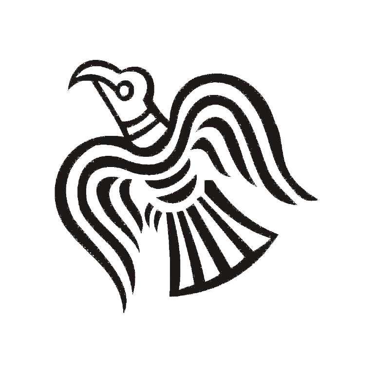

Referencias
Tanto los textos como imágenes de este sitio está disponible bajo la Licencia Creative Common Atribución Compartir Igual 3.0

Tanto los textos como imágenes de este sitio está disponible bajo la Licencia Creative Common Atribución Compartir Igual 3.0